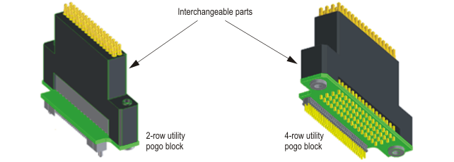
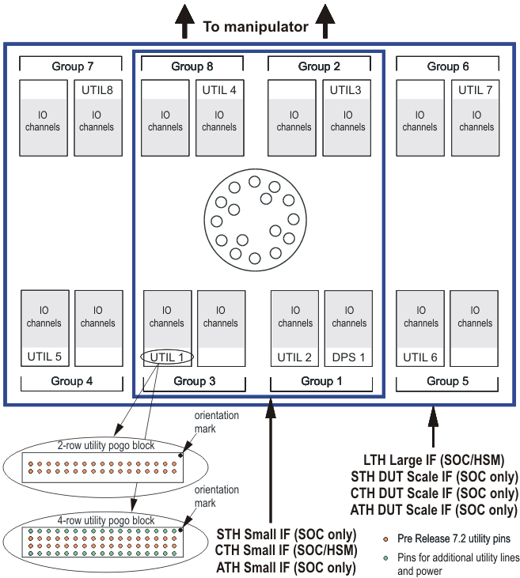

Utility line assignments
All utility lines have read and write capabilities. The lines are routed to the DUT interface where they are available on utility pogo blocks. A utility pogo block contains 16 utility lines (00 to 15) or 32 utility lines (00 to 31).
Which type of block you use depends on the following factors:
- All small DUT interfaces use 16-line 2-row utility pogo blocks with 34 pogo pins. This results in a total of 64 utility lines on the DUT interface.
- DUT Scale / large DUT interfaces can take either 16-line utility blocks (2-row) or
32-line utility blocks (4-row) with 68 pogo pins:
- 2-row (16-line) utility pogo blocks result in a total of 128 utility lines on the DUT interface.
- 4-row (32-line) utility pogo blocks result in a total of 256 utility lines
on the DUT interface.
Using 256 utility lines requires that 4-row utility blocks and the SmarTest 7.2 (or higher) are installed.
The extra pogo pins of 4-row blocks provide not just the additional utility lines but also additional power lines supplied by the External utility power supply (V93000 systems). The external utility power supply can be accessed only via the 4-row utility pogo blocks.
The type of utility block you use is up to you and will obviously depend on your utility line and DUT board power requirements. Regardless of the choice you make, all utility pogo cables always have 32 utility lines. The pogo blocks are interchangeable and are plugged on to the end of the pogo cable. The figure below shows this principle.

For dependencies between system hardware and the installed software refer to Configuration of 4-row or 2-row utility pogo blocks.
The figure below shows the layout of utility and DPS blocks for the various combinations of test heads and DUT interfaces.

Pins in the inner rows of the 4-row pogo block are identical to those on the 2-row pogo block. The additional utility lines on the 4-row pogo block are electrically compatible with those on the 2-row utility block. For details of utility pogo mapping and the mapping of pins on a utility pogo block for various combinations of test head and DUT interface see the relevant link below.
All eight utility blocks (in eight groups) are available on:
- the Large Test Head with the large DUT interface (employs active wiring board)
- the Small Test Head with the DUT Scale interface (employs active wiring board)
- the Compact Test Head with the DUT Scale interface (employs active wiring board)
- the A-Test Head with the DUT Scale interface (employs active wiring board)
Four utility blocks UTIL 1, 2, 3 and 4 (in four groups) are available on:
- the Small Test Head with the small DUT interface
- the Compact Test Head with the small DUT interface
- the A-Test Head with the small DUT interface (employs active wiring board)
Functional changes
- Introduced before SmarTest 6.3.2
- SmarTest 6.5.4: CTH with DUT Scale interface introduced
- SmarTest 7.1.0: A-test head introduced
- SmarTest 7.2.0: 256 sequencer‑controlled utility lines introduced on ATH/CTH/STH DUT Scale and on LTH
- SmarTest 7.2.0: External utility power introduced on ATH/CTH/STH DUT Scale and on LTH